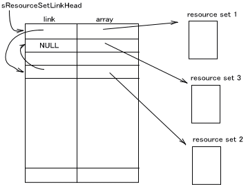

The Environmental Resources (ENV) library provides a method for easily getting values defined as resources from a program. Resources are various parameters and configuration values for which the resource names have been defined. Resource values are obtained from a program by specifying a resource name.
The ENV library provides a convenient way to test operations during program development by changing parameters or by using shared configuration values on multiple programs.
In this ENV library, resource values are returned in response to queries about resource names. A resource name comprises a class name, a period ("."), and a member name.
Example:
In the case of the resourcemyServer.Hostname,myServeris the class name, andHostnameis the member name.
These types of resources can be given any of the following as values: u8, s8, u16, s16, u32, s32, u64, s64, BOOL, string, or binary. String data is labeled string, and binary data is labeled binary.
Resources are managed internally with a single ENVResource structure. (Two structures are used for 64-bit resource values.)
struct ENVResource
{
char* name;
u16 len;
u16 type;
void* ptr;
};
The name element is a pointer to the resource name. The len element is the length of the resource. The type element is the information type when the resource is declared. The ptr element is the pointer to the location where the string and data are actually stored for string and binary. Values for u8, s8, u16, s16, u32, s32, or BOOL are assigned to ptr. u64 and s64 use two continuous data resources.
Resource data are defined with an ENVResource structure array. The following macros have be prepared to define the len, type, and ptr members for the above-mentioned ENVResource structure all at once. These macros make it easier to describe resources.
ENV_U8 |
A macro for a u8 value. |
ENV_S8 |
A macro for an s8 value. |
ENV_U16 |
A macro for a u16 value. |
ENV_S16 |
A macro for an s16 value. |
ENV_U32 |
A macro for a u32 value. |
ENV_S32 |
A macro for an s32 value. |
ENV_U64 |
A macro for a u64 value. |
ENV_S64 |
A macro for an s64 value. |
ENV_BOOL |
A macro for a BOOL value. |
ENV_STRING |
A macro for string data. |
ENV_BINARY |
A macro for binary data. |
By using these macros, resources are defined as combination of resource names and resource macros, as shown below.
ENVResource myResource[] = {
"myClass.str1", ENV_STRING( "mario" ),
"myClass.bin1", ENV_BINARY( "\x12\x34\x56\x78" ),
"myClass2.data1", ENV_S32( -500 ),
"myClass2.data2", ENV_U16( 0x8000 ),
ENV_RESOURCE_END
};Add ENV_RESOURCE_END at the end of the data.
The resource array defined above is then managed internally.
Searches for resources are performed from the resource array. In the ENV library, multiple resource arrays can be registered in the system. The resource arrays are linked together as a list inside the system. When a search is performed, it is conducted on every array in that list. Searches are performed from the very beginning of the list and from the very beginning of the arrays. If the same resource exists in both, the first one found is used.
The ENV_AppendResourceSet function adds new resource arrays to the end of the list.
The ENV_PrependResourceSet function adds new resource arrays to the beginning of the list.
The ENV_InsertResourceSet function adds new resource arrays to a location of the user's choice.
The ENV_SetResourceSet and ENV_SetResourceSetArray functions delete lists that have been registered up to this point and then register a specified list.
There is a limit to the number of resource arrays that can be registered. The number is ENV_RESOURCE_SET_MAX. (Defined as 8.)

The ENV_Init function specifies resource arrays using the ENVResource* resourceArray[] array, as shown below.
SDK_WEAK_SYMBOL ENVResource *resourceArray[] = { NULL };
void ENV_Init(void)
{
:
ENV_SetResourceSetArray( resourceArray );
}resourceArray[] is an array that holds resource arrays. Because resourceArray[] is an array of NULL members that is defined with the WEAK symbol in the system, it is useful for the application to define the array itself. Because resourceArray[] is an array of resource arrays, it can specify a number of necessary resource arrays all at once.
Use the functions that get resource values from resource names based on the resource definition, as shown below.
ENV_GetU8 |
A u8 value defined with ENV_U8. |
ENV_GetS8 |
An s8 value defined with ENV_S8. |
ENV_GetU16 |
A u16 value defined with ENV_U16. |
ENV_GetS16 |
An s16 value defined with ENV_S16. |
ENV_GetU32 |
A u32 value defined with ENV_U32. |
ENV_GetS32 |
An s32 value defined with ENV_S32. |
ENV_GetU64 |
A u64 value defined with ENV_U64. |
ENV_GetS64 |
An s64 value defined with ENV_S64. |
ENV_GetBOOL |
A BOOL value defined with ENV_BOOL. |
ENV_GetString |
String data defined with ENV_STRING. |
ENV_GetBinary |
Binary data defined with ENV_BINARY. |
The obtained values are stored at the beginning of the pointer designated in the arguments. The function return value indicates whether the values were successfully obtained.
Two functions have been prepared that get strings and binaries along with their sizes: ENV_GetStringAndLength and ENV_GetBinaryAndSize.
By passing the class names to the ENV library in advance, the class name part can be omitted, and the member name can be used alone to designate with the functions that require resource names. When designating a member name by itself, be sure to add a period (".") before the name.
Use the ENV_SetClass function to declare class names.
Example:
All of the following, where the class name is declared,
u32 d1, d2, d3; (void)ENV_GetU32( "myClass.myData1", &d1 ); (void)ENV_GetU32( "myClass.myData2", &d2 ); (void)ENV_GetU32( "myClass.myData3", &d3 );can be designated in the following forms, with only the member names:u32 d1, d2, d3; ENV_SetClass( "myClass" ); (void)ENV_GetU32( ".myData1", &d1 ); (void)ENV_GetU32( ".myData2", &d2 ); (void)ENV_GetU32( ".myData3", &d3 );
The function used to obtain the current configuration values is ENV_GetClass().
Below is an example of using the ENV library.
ENVResource myResource1[] = {
"server1.hostName", ENV_STRING( "myserver" ),
"server1.IP", ENV_BINARY( "\xc0\xA8\x00\x01" ),
"server1.port", ENV_U16( 5000 ),
ENV_RESOURCE_END
};
ENVResource myResource2[] = {
"server2.hostName", ENV_STRING( "ftpserver" ),
"server2.IP", ENV_BINARY( "\xc0\xA8\x00\x02" ),
"server2.port", ENV_U16( 21 ),
ENV_RESOURCE_END
};
ENVResource* resourceArray[]={ myResource1, myResource2, NULL };
main()
{
char* hostname;
u8* ipAddress;
int ipSize;
u16 portNum;
:
//---- ENV system initialization
ENV_Init( myResources );
//---- Class name designation when omitted
ENV_SetClass( "server1" );
//---- Get resource
if ( ! ENV_GetString( ".hostName", &hostname ) )
{
OS_Printf( "error: hostname is not defined.\n" );
};
if ( ! ENV_GetBinaryAndSize( ".IP", &ipAddress, &ipSize) )
{
OS_Printf( "error: ipAddress is not defined.\n" );
};
if ( ! ENV_GetU16( ".port", &portNum ) )
{
OS_Printf( "error: portNum is not defined.\n" );
};
:
}
The ENVResourceIter structure has been defined to search for resources using specified class names or member names. This is used as a search iterator. The functions that get the resource by using the iterators are ENV_InitIter, ENV_SearchByClass, ENV_SearchByMember, ENV_SearchByType, and ENV_SearchByPartialName.
The following shows the resource with the specified class className being obtained.
ENVResourceiter iter;
ENVResource* p;
ENV_InitIter( &iter );
while( (p = ENV_SearchByClass( &iter, "className" ) ) )
{
OS_Printf( "resource = %s\n", p->name );
}To search for a resource with the specific name "memberName," use the following statements. The member name is a text string that does not contain a period ("."). If there are any periods other than the delimiter between the class and member, the comparison is performed on the member name up to the location of the first period.
ENVResourceIter iter;
ENVResource* p;
ENV_InitIter( &iter );
while( (p = ENV_SearchByMember( &iter, "memberName" ) ) )
{
OS_Printf( "resource = %s\n", p->name );
}For example, when searching with the member name "member,"
"class.member"
"class.member.001"
"class.member.class"has a match, but
"class.member001"
"class.member2.member"do not match.
It is also possible to get the resource array that includes the resource obtained with ENV_GetLastResourceSetFromIter function immediately after an iterator-based resource search.
Specify the resource and use the ENV_GetBelongingResourceSet function to get the resource array to which the resource belongs.
2005/08/29 Added support for multiple registrations of a resource array.
2005/08/17 Initial version.
CONFIDENTIAL